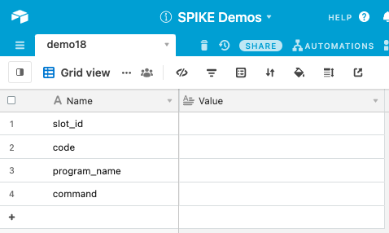
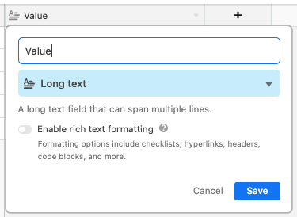
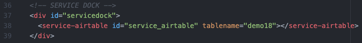
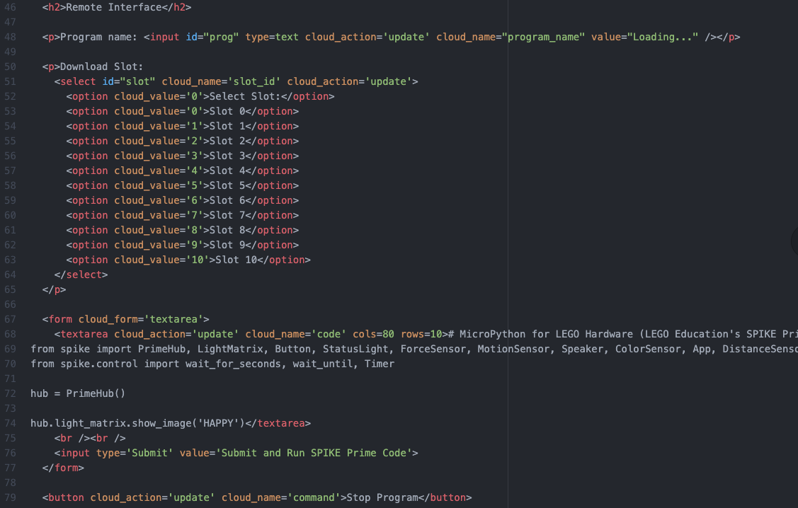
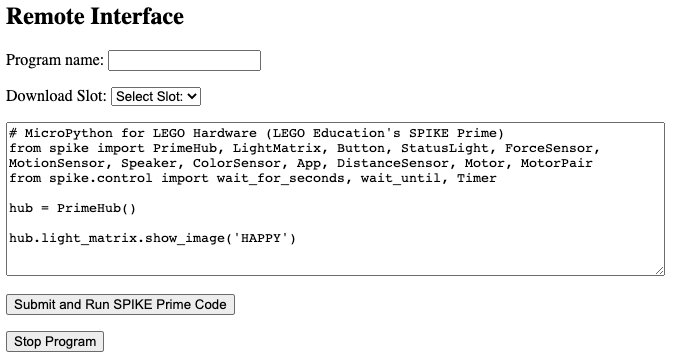
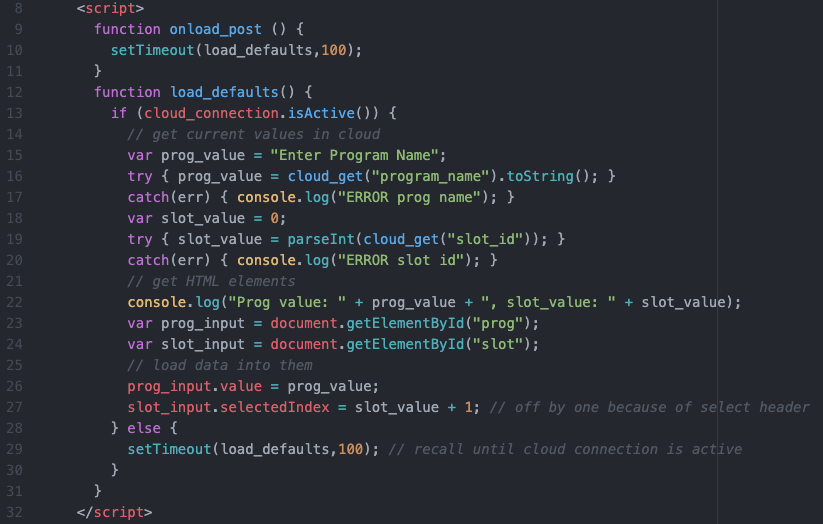
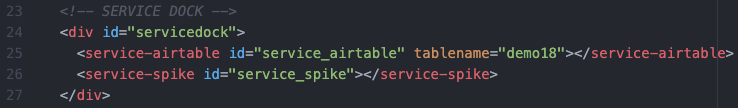
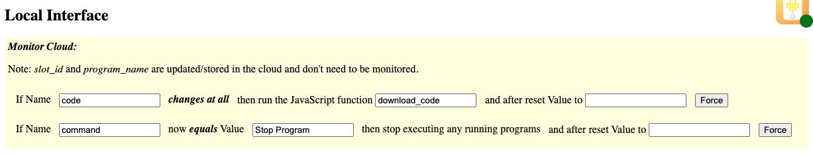
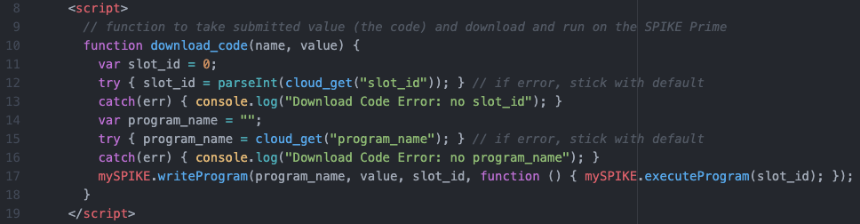

Demo 18: SPIKE Prime MicroPython IDE Project
This project-demo creates a browser-based SPIKE Prime MicroPython
IDE for remotely programming a SPIKE Prime.
Documentation
Be sure to view the overall Documentation for configuring
the cloud storage (API key, Base ID, etc) and for more information on how the entire system works.
Airtable Setup
The Airtable is set up as follows:
- slot_id: which slot on the SPIKE Prime should the program go into
- code: the MicroPython code
- program_name: what is the name of the program
- command: this is used (when equals 'Stop Program') to stop currently running program

In Airtable, to change the type of a column, use the "Customize field type"
option to select "Long text" as the type of the Value. This allows
long multiline text that includes "new line characters."

Remote Page Setup
Service Dock
The remote page has the Airtable Service Dock element. Make sure to
update the tablename attribute to match your table name.

Remote Interface
The interface has a Program Name input text and Slot ID select dropdown.
There is a Form input with a textarea for entering code (with the default
MicroPython code pre-entered).
Finally, outside the form, is a button for stopping the program.

This is what the interface will look like on the Remote Page:

When the page loads, we want to pre-populate the Program Name and the
Slot ID with previously stored values in the Cloud. This JavaScript
function checks to see if the cloud is active, and when it is, reads in
the values and sets the HTML elements.

Local Page Setup
Service Dock
The local page has both the Airtable Service Dock element (make sure
to update the tablename attribute to match your table name).
There is also a single SPIKE Prime Service Dock element.

Local Interface
The local page is monitoring "code" to see when it changes, at which point
it calls the local JavaScript function download_code to download the code.
The "command" is being monitored to see if it equals "Stop Program" and, if so,
will stop the program (and reset itself); this is the same as Demo 01.

This is how the interface will look on the Local Page:

Here is the JavaScript code that gets the Program Name and Slot ID and then
downloads the code into the SPIKE Prime:

Demo 18 Quick Links:
Return back to the main homepage.